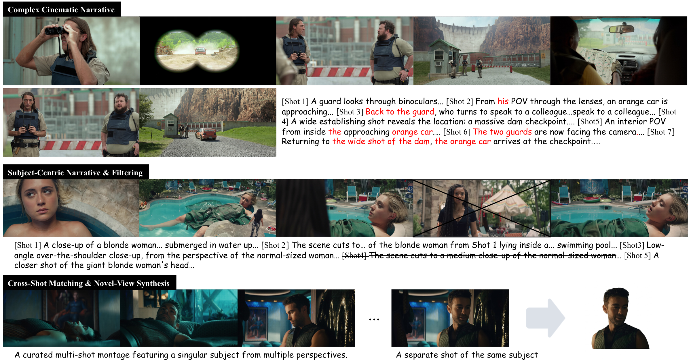
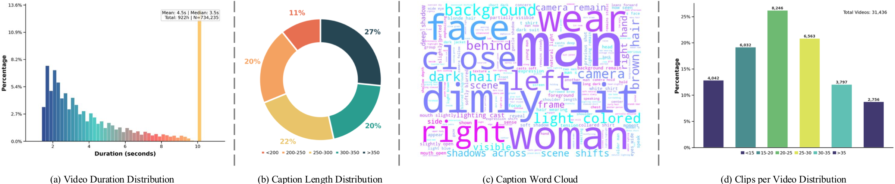
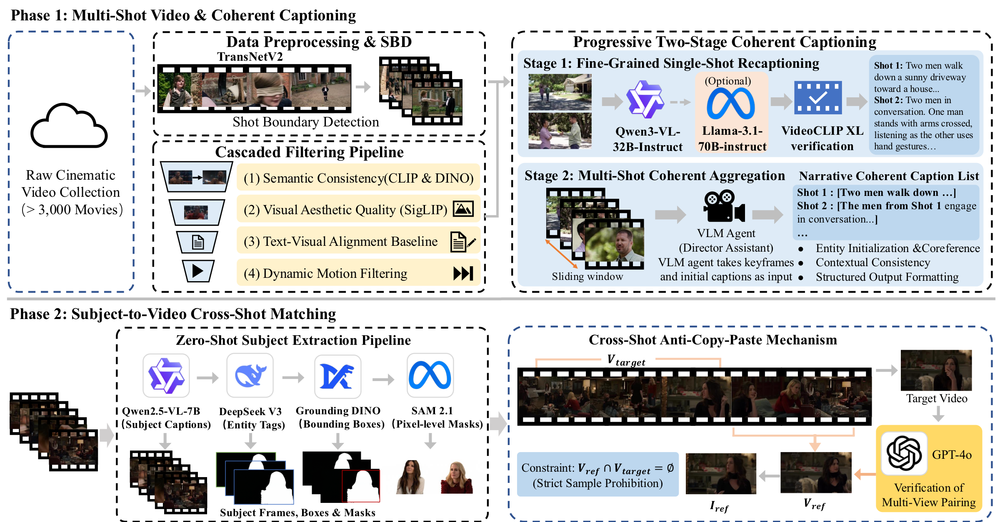
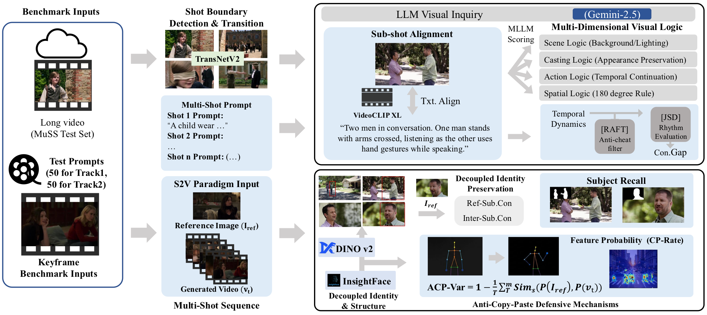
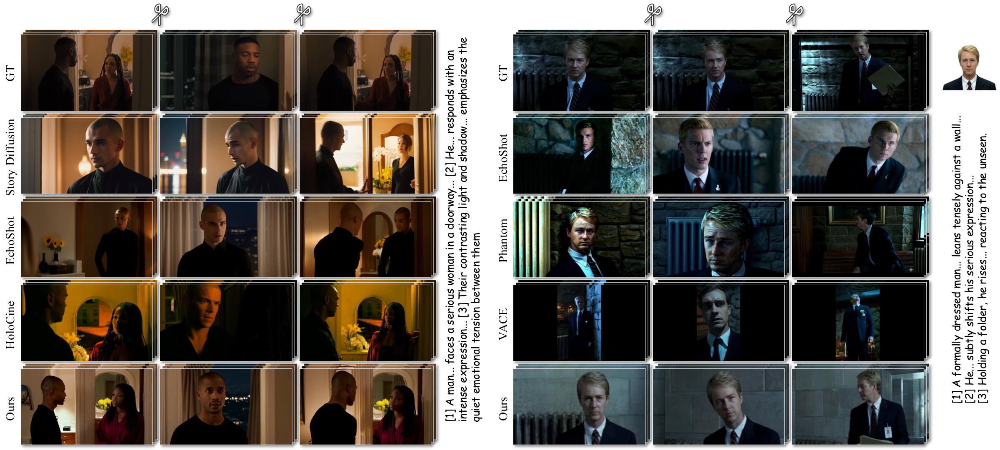
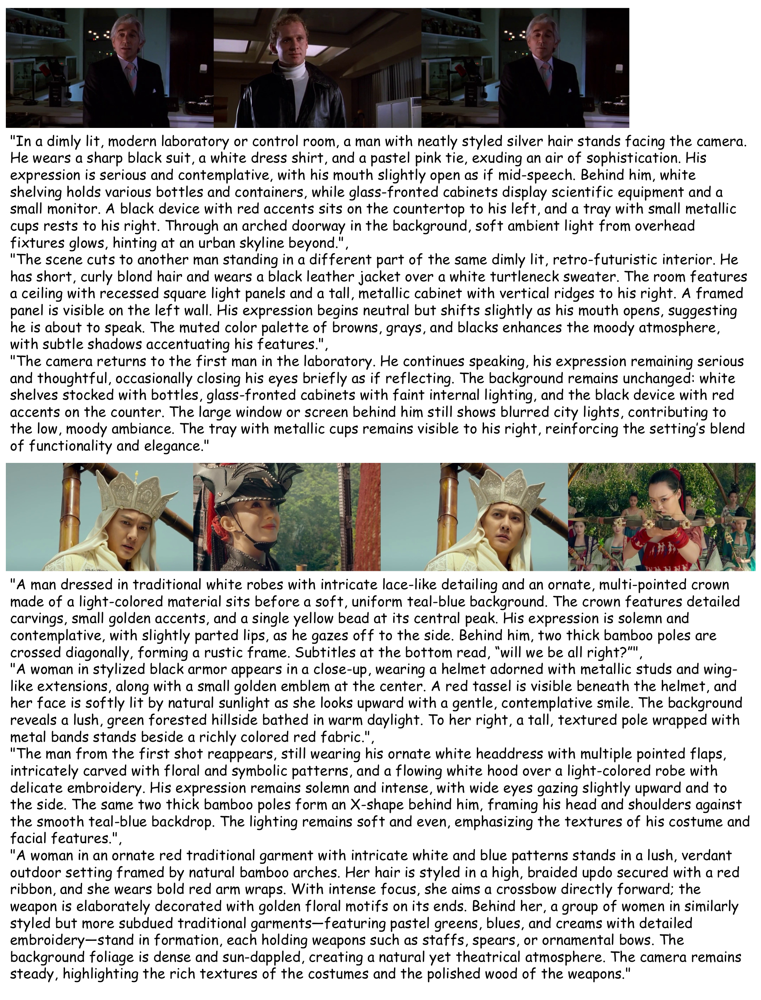
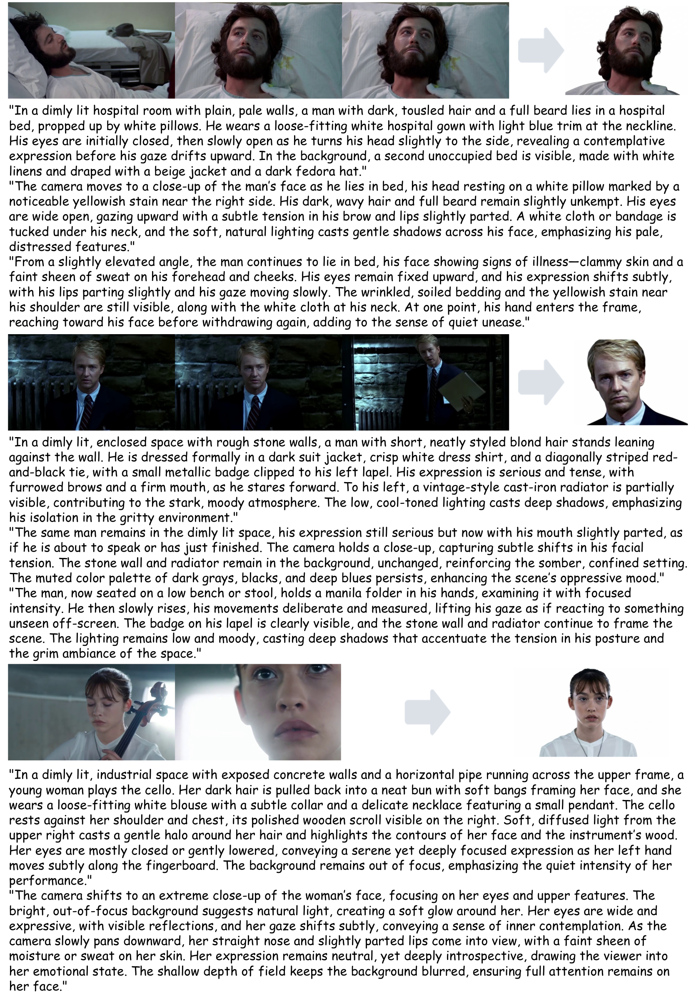

TL;DR: MuSS is a large-scale cinematic dataset and benchmark for multi-shot video generation and Subject-to-Video generation. It targets authentic narrative logic, shot-level text-video alignment, and cross-shot identity preservation beyond isolated single-shot generation.

MuSS focuses on two complementary settings: Complex Cinematic Narrative for montage, shot transitions, and multi-character storytelling; and Subject-Centric Narrative for preserving the same subject across disjoint shots and viewpoints.
While video foundation models excel at single-shot generation, real-world cinematic storytelling inherently relies on complex multi-shot sequencing. Further progress is constrained by the absence of datasets that address three core challenges: authentic narrative logic, spatiotemporal text-video alignment conflicts, and the copy-paste dilemma prevalent in Subject-to-Video generation. To bridge this gap, we introduce MuSS, a large-scale, dual-track dataset tailored for multi-shot video and Subject-to-Video generation. Sourced from over 3,000 movies, MuSS explicitly supports both complex montage transitions and subject-centric narratives. Alongside the dataset, we propose the Cinematic Narrative Benchmark, featuring a visual-logic-driven paradigm and a novel Anti-Copy-Paste Variance metric to rigorously assess continuous storytelling and 3D structural consistency.

MuSS provides large-scale cinematic material with diverse clip durations, caption lengths, visual concepts, and source videos.

The construction pipeline first turns raw cinematic footage into high-quality physical shots with coherent captions, then builds cross-shot Subject-to-Video pairs by sampling reference subjects from disjoint shot contexts.

The Cinematic Narrative Benchmark combines shot boundary parsing, expert perception models, and large multimodal model based visual-logic assessment.
| Track | Evaluation Goal | Metrics |
|---|---|---|
| Track 1: Narrative Effectiveness | Shot-level alignment, transition precision, scene continuity, and visual logic. | Txt.Align, Trans.Dev, Scene.Con, Con.Gap, Scene.Logic, Casting.Logic, Act.Logic, Spat.Logic |
| Track 2: Subject Consistency | Cross-shot identity preservation, subject grounding, motion strength, and anti-copy-paste behavior. | Subj.Recall, Ref-Sub.Con, Inter-Sub.Con, Act.Str, ACP-Var, CP-Rate |

Qualitative benchmark results highlight structural limitations of existing methods and the role of MuSS in improving multi-shot consistency and 3D identity preservation.

Progressive multi-shot captions are aligned to physical shots, capturing shot transitions, scene changes, and multi-character narrative flow.

A reference subject is extracted from a disjoint shot, while the target sequence preserves identity across different viewpoints and contexts.
@article{zhang2026muss,
title = {MuSS: A Large-Scale Dataset and Cinematic Narrative Benchmark for Multi-Shot Subject-to-Video Generation},
author = {Zhang, Haojie and Wu, Di and Liu, Bingyan and Zhong, Linjie and Wei, Yuancheng and Ye, Xingsong and Liu, Nanqing and Liang, Yaling},
journal = {arXiv preprint arXiv:2604.23789},
year = {2026}
}